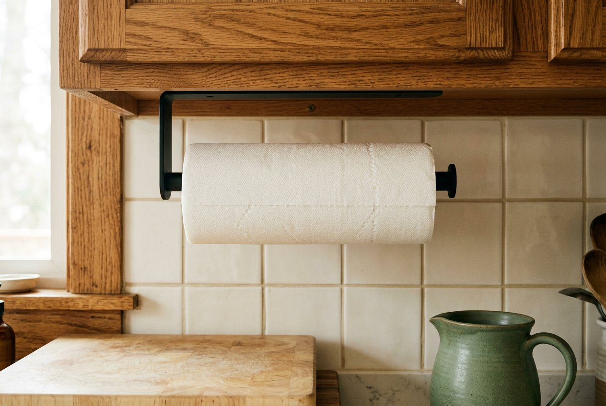

Project guide
Project guideWalls & finishes
Wallpaper smoothing kit
A smoother start for your next peel-and-stick project.
What to look forThe shortlist
Start with the small upgrade you want to make. These guides show what to check before buying.
Project guideWalls & finishes
A smoother start for your next peel-and-stick project.
What to look for
Project guideKitchen organization
Reclaim a little worktop space without moving the essentials.
What to look for Project guide
Project guideStorage & shelving
Give the pans you reach for most a spot of their own.
What to look forCategory illustrations, not product photos. Buying links are withheld until validated.